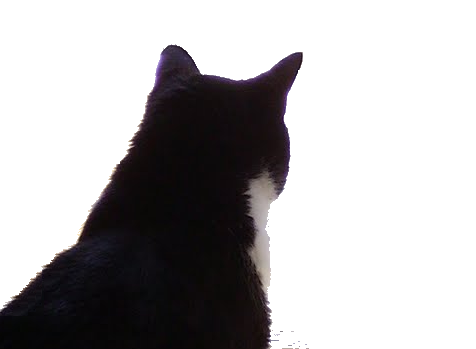

Chronological achievements list
- Chronological achievements list
- 2016 ~ 2017 Development of a microservice for JPMorgan, in Globant
- 2012 ~ 2013 Production support for Verizon's F&E mainframe system, in Globant
- 2011 Sentinel: a test-cases management application, in Globant
- 2011 "Telecom Pilot Test" project, in Globant
- 2011 Excepted vehicles filter, for Boldt S.A.
- 2010 Cafam portal, in Globant
- 2006 ~ 2007 OAG Sequence & Load for OAG, in Globant
- 2005 Boldt - Voters roll printing
- 2005 Boldt - Check personalization invoicing
- 2003 ~ 2005 Boldt - Personalized checkbooks printing
- 1999 ~ 2001 Informatization of Caminos del Río Uruguay S.A.
- 1998 Cereals harvest contracts and exports, Nenuca S.A.
- 1999 Y2K tools
- 1998 Faro Buenos Aires, venta de CDs online
- 1980 ~ 2010 Lautrec, Bertrán , ...
- 1978 Análisis de costos, para Armetal S.A.
- Brevísima historia
2016 ~ 2017 Development of a microservice for JPMorgan, in Globant
Development of a user and client profiles microservice for the Bank's global international trading application, that moves billions of dollars by the hour.
My work, as a Business Analyst, was to manage the team backlog using Jira and an agile process for a 10 or 12 developers team.
The software was developed in Java, to run in the bank's Tier-3 UNIX servers.
It is the critical application type that, if it fails, the Bank loses millions of dollars every single nimute. We completed the task and successfully deployed to production.
2012 ~ 2013 Production support for Verizon's F&E mainframe system, in Globant
I took part, as a programmer, in the team that provided global support to Verizon's "F&E" system that provisions point-to-point communication lines and does the invoicing, a few billions a month.
The system runs in an IBM mainframe, and was developed in CA Ideal, a vintage 4GL similar to COBOL that I had to quickly master to be able to do my work.
Additionally, using Excel VBA, as a personal initiative I automated a report that went from a daily 2-hours task to a 10-minutes one.
2011 Sentinel: a test-cases management application, in Globant
 I took part in the development of this test-cases management tool named Sentinel, to be open-sourced.
I was appointed as a BA because of my Usability / UX skills, given that the application was intended to be used full-time by hundreds of testers so any usability enhancements were going to have a significant impact in the cost and the final quality of the projects where the tool was to be used.
I ended up performing as the PM (Project Manager) of the project in addition to doing its design (backlog).
The project was discontinued due to lack of support, despite the high interest of the testers that were expectant.
2011 "Telecom Pilot Test" project, in Globant
 The project goal was to migrate part of the COBOL programs and jobs of
Telecom Argentina's giant invoicing application from an IBM Mainframe
to the Micro Focus environment. It was a 7-month effort for a team of
8 people.
The project goal was to migrate part of the COBOL programs and jobs of
Telecom Argentina's giant invoicing application from an IBM Mainframe
to the Micro Focus environment. It was a 7-month effort for a team of
8 people.
The programs chosen were the most complex, some of them were more that 50K LOC.
My work was to provide or recreate all the additional software required (I emulated some Control-M features), test COBOL + DB2 programs, migrate the JCL, and to edit the final report.
2011 Excepted vehicles filter, for Boldt S.A.
Boldt operates the traffic tickets data recolection system in the Provincia de Buenos Aires.
For that system, they chartered me with the design and development of a software to filter the offenses made by excepted vehicles, like ambulances or police cars.
As the system processes gigabytes of critical information (data and pictures output by radar or lidar kinemometers), and the filtering stage has to be run on premises by largely untrained personal, the application needed to have very high usability. That's why they resorted to me.
I provided them a zero-defect application that runs without a glitch.
2010 Cafam portal, in Globant
The client is a big private organization that operates a network of government subsides for low-income workers.
The main purpose of the portal is to promote their hospitality, tourism, supermarket, education, insurance, sports ... offerings among their 500K affiliates by publishing infomertial articles.
As the BA and Usability / UX expert I designed an application that exceeded the client's expectations.
My design automated the choice of articles to be shown to each affiliate.
The articles compete to be published depending on the affiliate's needs and their profiles, and article's parameters like age, interest and interest devaulation policy.
2006 ~ 2007 OAG Sequence & Load for OAG, in Globant
OAG compiles the flight schedules of all the airlines in the World. The data is sold to the big online ticketing sites.
They were migrating their applications from IBM mainframe with VSAM files to AIX with IBM DB2.
My mission, as a Senior DB2 developer, was to refactor several huge complex undocumented stored procedures that blocked the progress of the project.
After a while, scripts that would crash the server after running for 30 hours, ended happily in 20 minutes.
2005 Boldt - Voters roll printing
 Boldt printed the electoral roll for the 2005 Argentine National elections, about
40M pages.
Boldt printed the electoral roll for the 2005 Argentine National elections, about
40M pages.
A task previous to the printing itself was the capture of the 24 districts (states) registries data that happens twice, once before and once after updating it.
The representants of some districts have complained to the Federal Gov about several days delays in the data capture. The company was facing a harsh contract breach trial.
I volunteered to solve this by designing and developing a new application during the four weeks available for data updating before printing the definitive version.
The outcome was so good that Boldt received a felicitation note in place of the original complain letter.
A significant part of the success was due to the usability / UX of the application. It was easy to learn and use, and remembered each district's options in between sesions so re-processing was very quick.
The application was developed for Windows PCs using Microsoft VB6 and Access SQL.
2005 Boldt - Check personalization invoicing
 Boldt provides personalized check books for a number of banks, like Bank
of America and others. This is millions of checks per month in 25- and 50
sized checkbooks.
Boldt provides personalized check books for a number of banks, like Bank
of America and others. This is millions of checks per month in 25- and 50
sized checkbooks.
I designed and implemented a highly usable application to do the invoicing of this service and a number of related reports.
The new application shortened the task from 4 days to couple hours, with much better results.
It also replaced the printing of thousands of pages by Excel files sent by email, with a positive impact in the client's work and the environment.
The application was developed using VB6, Access and Excel VBA.
2003 ~ 2005 Boldt - Personalized checkbooks printing
 Boldt provides personalized checkbooks for a number of big banks
in Argentina. The personalization means printing the client data, account,
check number, routing, etc.
Boldt provides personalized checkbooks for a number of big banks
in Argentina. The personalization means printing the client data, account,
check number, routing, etc.
This task requires excruciating security measures, as any error (like a duplicated check) is an opportunity for a fraud.
During my performance the quality evolved from 12 defects/year to about zero.
A significant factor was the enhanced usability of the UI used to capture the requirements sent by the banks, operated during the night by blue-collar factory workers.
1999 ~ 2001 Informatization of Caminos del Río Uruguay S.A.
 CRUSA was an old-fashioned constructions business that builds and exploits the
Zarate-Brazo Largo to Paso de los Libres highway. It completely lacked an IT
policy and practice.
CRUSA was an old-fashioned constructions business that builds and exploits the
Zarate-Brazo Largo to Paso de los Libres highway. It completely lacked an IT
policy and practice.
I designed and implemented (partially, until the Argentine 2001 crisis happened) a custom ERP application to build a bridge integrating the technical and the administrative areas data that would do direct cost reporting and planning.
Among the first components implemented was the Aggregates Transportation module.
The users were engineers, foremen and administrative clerks with deep knowledge of the construction things but no IT experience. No need to say that high usability was a must in order to buy adoption from the users.
It reduced to minutes some tasks that formerly would take days.
It was a client-server application developed with MS VB6 and IBM DB2 in the back end.
1998 Cereals harvest contracts and exports, Nenuca S.A.

I implemented the complexity of the harvest purchase contracts in an easy to use application.
The users of this application were extreme: either 70-years-old computer-iliterates who were afraid of technology or 20-years-old wizards.
I designed and implemented a UI that satisfied all of them. Users only needed to know about harvest contracts and international commerce, the system was fully transparent.
The system acceptance was amazing.
1999 Y2K tools
 This year my work was special because of the software fixings in
preparation for year 2000.
This year my work was special because of the software fixings in
preparation for year 2000.
Some of my clients that required service were AMSA (Met Life), NOBLEX (Sanyo), Editorial La Ley (Thompson Publishing) and others.
After analyzing the available tools, including IBM's, I concluded that due to their low usability it was almost easier to do the work by hand.
So I rolled out my own tool. I used VB6 to load the codebase into DB2 and recursive SQL queries to find the spots to fix.
Using this tool we delivered on schedule without defects and without heroic efforts. Actually, it was a pleasant work to do.
Since I started to work with computers I developed tools for others or me myself to use. This is an important influence in my development: to think the applications as tools for the users to achieve their goals with efficiency, efficacy and satisfaction - User Centered Design.
1998 Faro Buenos Aires, venta de CDs online

Era un sitio típico de venta de CDs musicales online. A partir de mi participación en este sitio como webmaster empecé a participar en el ambiente de la usabilidad y el diseño de interacción, y a estudiar el tema regularmente.
Llevé la interfase de usuario a un nivel completamente aceptable de usabilidad. Yo recibía los emails de los usuarios con dificultades, e implementaba los cambios necesarios para que esos problemas no se repitieran, hasta que la cantidad de problemas se redujo a un número insignificante.
1980 ~ 2010 Lautrec, Bertrán , ...

En 1979 convencí a un cliente, una empresa constructora mediana, para que me encargara software interactivo para sus sistemas más críticos, la liquidación de haberes y la gestión administrativa. En esa época lo normal era trabajar con listados, de cientos de páginas.
En 1980 los sistemas estaban en producción, y se usaron durante unos 25 años en ese cliente inicial; en 2010 todavía están en uso en un par de lugares (pagan para usarlos).
Durante mi relación con esos clientes aprendí mucho sobre los usuarios y la manera en que interactúan con las interfases de los sistemas. Especialmente, aprendí cómo hacer interfases que sean satisfactorias desde el primer día.
Otro aspecto interesante fué la eficiencia de mis sistemas. Lautrec Publicidad, y Distribuidora Bertrán, son dos de los clientes que usaron mi software de gestión y mientras lo usaban crecieron multiplicando su volúmen de operación por 7 y por 4, respectivamente. En ambos casos luego del crecimiento tenían mucho mejor información que al comienzo, con menor cantidad de personal en el área administrativa. A partir de esos incicios, y de muchos otros, me fuí percatando de que las cosas que yo hago son diferentes de las que hace la mayoría de mis colegas. Tardé años para percatarme, por que al no existir la Internet no tenía manera de comparar.
1978 Análisis de costos, para Armetal S.A.
 Armetal S.A., actualmente Dana Argentina, hace autopartes. En
épocas de inflación negocian los aumentos de precios justificándolos con un análisis del impacto de
los aumentos en los insumos (mano de obra, acero, etc...).
Armetal S.A., actualmente Dana Argentina, hace autopartes. En
épocas de inflación negocian los aumentos de precios justificándolos con un análisis del impacto de
los aumentos en los insumos (mano de obra, acero, etc...).
Como la vigencia de los aumentos es a partir del momento en que Ford recibe la solicitud, trabajaban sin dormir o durante los fines de semana para presentar las planillas lo antes posible.
Me encomendaron el desarrollo de un sistema para la nueva computadora que habían adquirido, una IBM con terminales. Este fué mi primer software interactivo. Pasaron de trabajar días a trabajar horas. El ROI fué impresionante: amortizaron todo el costo del desarrollo con el primer camión de mercadería que llegó a Ford luego de la presentación de los análisis de costos.

Brevísima historia
Entre 1974 y 2001 lideré mi propia organización de desarrollo de software, vendiendo o alquilando licencias a algunos clientes selectos como XEROX, Techint, AMSA, Bonafide, NOBLEX, Editorial La Ley y otros.
En 2001 me quedé casi sin clientes. Los que no habían sido comprados por multinacionales desaparecieron por causa de la crisis, de modo que trabajé dentro de empresas. En 2006 me llamaron de Globant donde comencé a trabajar inmediatamente y continué durante 10 años hasta que me jubilé en agosto 2017.